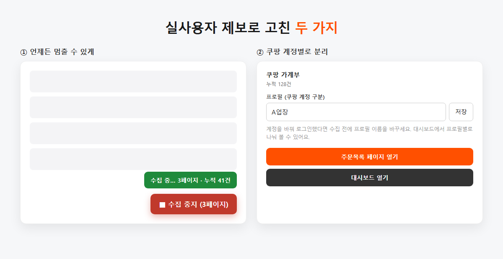
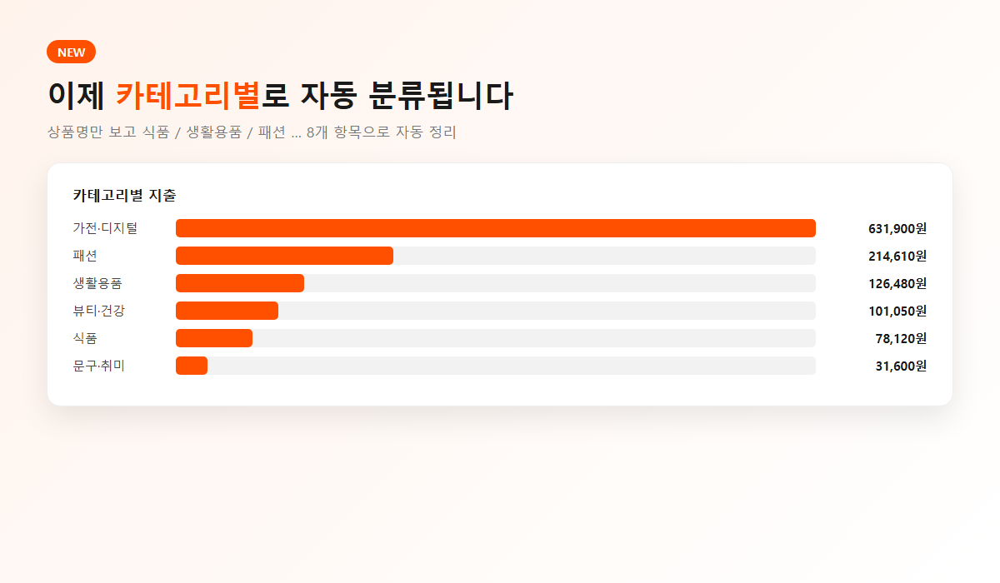

지난 글에서 쿠팡 주문내역을 엑셀로 뽑는 확장을 직접 만들어서 공개했다. 솔직히 나 혼자 쓰려고 만든 거라 누가 쓸까 싶었는데, 블로그 댓글로 실제 사용자 제보가 왔다.
업장을 운영하시면서 매달 매입자료를 정리하는 분이었다. 그동안 쿠팡 화면을 캡쳐해서 GPT에 넣고 정리하셨다고. "손목 빠질 것 같았다"는 말에 좀 웃었고, 이어서 남겨주신 두 가지에서 뜨끔했다. 둘 다 명백히 내가 빠뜨린 거였다.

이 확장은 버튼을 누르면 주문목록 페이지를 최대 100페이지까지 알아서 넘기면서 수집한다. 자동으로 되니까 편하다고 생각했는데, 정작 멈추는 버튼을 안 만들었다.
내 계정은 주문이 많지 않아서 몇 초면 끝나니까 몰랐던 거다. 근데 주문이 수백 건인 사업자 계정이면? 시작해놓고 화면이 혼자 계속 넘어가는데 멈출 방법이 없다. 상상만 해도 답답하다.
그래서 수집 중에는 버튼이 빨간 "■ 수집 중지"로 바뀌게 했다. 누르면 바로 멈추고, 그때까지 수집한 내역은 그대로 저장된다. 페이지 이동 직전에 한 번 더 확인하도록 해서, 대기 중에 눌러도 다음 페이지로 안 넘어간다.
자동화는 "알아서 해주는 것"이 아니라 "언제든 내가 개입할 수 있는 것"이어야 한다. 멈출 수 없는 자동화는 그냥 통제 불능이다.
이건 더 뼈아팠다. 이분은 쿠팡 계정을 3개 운영하시는데, A계정에서 수집하고 로그아웃한 뒤 B계정에서 수집하니 내역이 한데 섞여버린 것이다. 나는 계정을 하나만 쓰니까 아예 고려조차 안 했다.
고치려고 보니 생각보다 까다로웠다. 쿠팡 페이지는 로그인한 계정의 식별자를 내주지 않는다. 페이지 데이터를 다 뒤져봐도 "로그인 여부(true/false)"만 있고 계정 ID는 없다. 화면 상단에 이름이 있긴 한데 김*휘님처럼 마스킹돼 있고, 결정적으로 본인 명의로 계정을 여러 개 만들면 이름이 전부 똑같다. 자동 판별이 불가능한 것이다.
그래서 추측을 포기하고 사용자가 직접 지정하는 "프로필" 방식으로 갔다. 확장 아이콘을 누르면 프로필 입력칸이 있고, 거기에 "A업장" 같은 이름을 적어두면 그 이름으로 태그가 붙는다. 계정을 바꿔 로그인하면 프로필 이름만 바꿔서 수집하면 된다. 대시보드에서 프로필별로 나눠 보거나, CSV도 프로필별로 따로 받을 수 있다.
자동으로 알아내는 게 항상 정답은 아니다. 틀릴 수 있는 추측보다, 사용자가 1초 만에 지정하는 게 낫다.
기왕 손대는 김에 원래 계획에 있던 걸 하나 앞당겼다. 상품명만 보고 카테고리를 자동으로 나누는 기능이다. 식품 / 생활용품 / 뷰티·건강 / 패션 / 육아 / 가전·디지털 / 문구·취미 / 기타, 8개로 나눈다.

단순히 키워드로 매칭하면 될 줄 알았는데, 쿠팡 상품명이 만만치 않았다. 예를 들어 이런 상품명이 있다.
순면 남자 오버핏 빅사이즈 워싱 피그먼트 빈티지 헬스 반팔티 (M~5XL)
여기엔 "헬스"(취미)와 "반팔티"(패션)가 동시에 들어있다. 먼저 매칭되는 쪽으로 하면 순서에 따라 결과가 달라진다. 그래서 더 긴(=더 구체적인) 키워드가 이기도록 했다. "반팔티"가 "헬스"보다 기니까 패션으로 간다.
내 실제 주문 상품명 31개로 테스트해보니 전부 정확하게 분류됐다. 물론 내 소비 패턴에 맞춘 사전이라 다른 분들 데이터에선 틀리는 게 나올 거다. 그건 제보받으면서 사전을 키워가려고 한다.
| 내용 | 상태 |
|---|---|
| 수집 중 언제든 중지 | 추가됨 |
| 쿠팡 계정별 프로필 분리 (수집/대시보드/CSV) | 추가됨 |
| 카테고리 자동 분류 + 카테고리별 지출 | 추가됨 |
| 배송비 반영, 분리배송 중복 집계 수정 | 수정됨 |
참고로 크롬 확장은 보통 자동으로 업데이트되는데, 바로 받고 싶으면 chrome://extensions에서 새로고침 한 번 눌러주면 된다.
혼자 만들 때는 내 사용 패턴이 곧 기준이 된다. 나는 계정 하나에 주문도 적으니까, "멈춤"도 "계정 분리"도 필요를 못 느꼈다. 근데 실제로 쓰는 사람은 나랑 다르게 쓴다. 당연한 얘긴데 직접 겪으니 확 와닿았다.
내가 짜둔 로드맵보다, 실사용자 댓글 하나가 훨씬 정확했다. 만들어서 내놓기 전까진 알 수 없는 것들이 있다.
쿠팡 지출 정리하다가 불편한 점 있으면 편하게 알려주세요. 확인하고 계속 고쳐나가겠습니다.
#쿠팡가계부 #쿠팡주문내역엑셀 #쿠팡엑셀 #쿠팡경비정산 #카테고리자동분류 #크롬확장 #1인개발 #개발일지 #바이브코딩 #사용자피드백